Configuración de Acceso al Sistema

Roles y Permisos
A través de la sección Roles y Permisos, el usuario Administrador o algún otro usuario con permisos especiales sobre la Configuración del sistema puede realizar la asignación de permisos para los diferentes roles definidos.
Gestión de roles y permisos
La gestión de roles y permisos se lleva a cabo siguiendo los pasos que se describen a continuación:
Usuario Administrador
- Acceder al sistema e iniciar sesión con usuario y contraseña.
- Ingresar a través del panel lateral a Configuración > Acceso > Roles/Permisos (ver Figura 15).
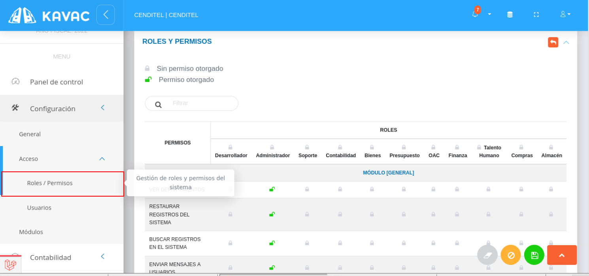
- Presione el icono Sin permiso otorgado ubicado a un lado del nombre del rol de usuario, si desea cambiar el estado a Permiso otorgado para habilitar todos los permisos para este rol de usuario (ver Figura).
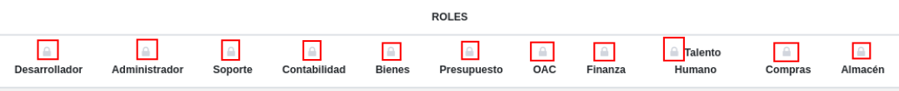
- Presione el icono Sin permiso otorgado ubicado sobre una fila asociada a un permiso específico, si desea cambiar el estado a Permiso otorgado para habilitar el permiso a este rol de usuario (ver Figura).
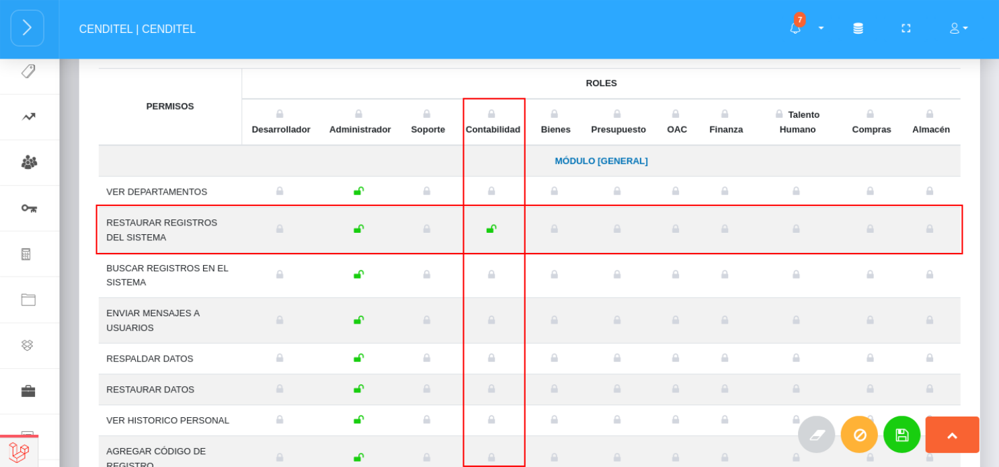
- Presione el botón Guardar
 para registrar los cambios efectuados.
para registrar los cambios efectuados. - Presione el botón Cancelar
 para cancelar registro y regresar a la ruta anterior.
para cancelar registro y regresar a la ruta anterior. - Presione el botón Borrar
 para eliminar datos del formulario.
para eliminar datos del formulario. - Si desea recibir ayuda guiada, presione el botón
 .
. - Para retornar a la ruta anterior, presione el botón
 .
.
Usuarios
A través de la sección Usuarios de la Configuración de Acceso al Sistema se lleva a cabo la gestión de cuentas de usuarios por parte de un usuario Administrador o un usuario con permisos especiales sobre la Configuración del sistema. Desde esta sección es posible crear una cuenta de usuario, definir roles y permisos para la cuenta de usuario en gestión, editar, eliminar y consultar cuentas de usuarios.
Para la gestión de cuentas de usuarios se deben seguir los siguientes pasos:
Crear cuenta de usuario
Usuario Administrador
- Acceder al sistema e iniciar sesión con usuario y contraseña.
- Ingresar a través del panel lateral a Configuración > Acceso > Usuarios (ver Figura 16).
- Presione el botón Crear
 ubicado en la esquina superior derecha de la sección Usuarios.
ubicado en la esquina superior derecha de la sección Usuarios.
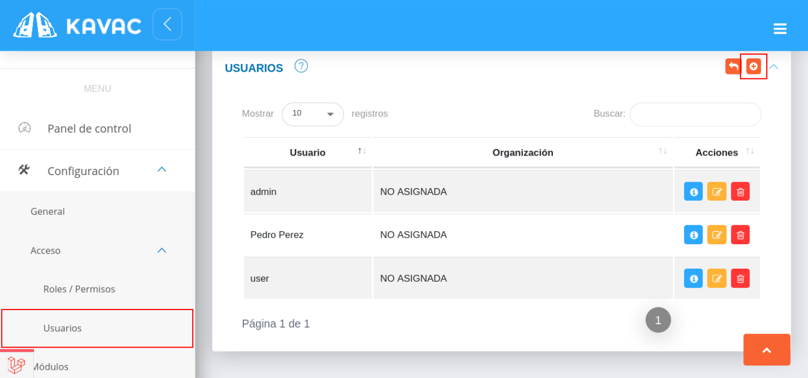
- Complete el formulario Gestión de Usuario. Seleccione un trabajador registrado en la nómina del módulo de talento humano a través del campo Empleado(no obligatorio), asigne un Nombre, Correo electrónico y Usuario para la cuenta en gestión.
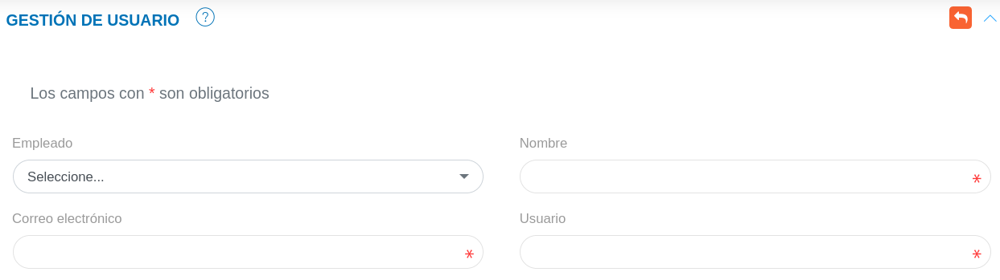
- Indique la opción
 del botón de selección para los roles que se desea habilitar para la cuenta de usuario en gestión.
del botón de selección para los roles que se desea habilitar para la cuenta de usuario en gestión.
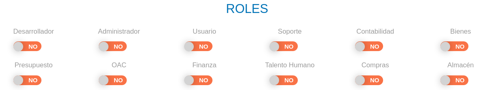
- Indique la opción del botón de selección para los permisos que se desea habilitar para la cuenta de usuario en gestión.
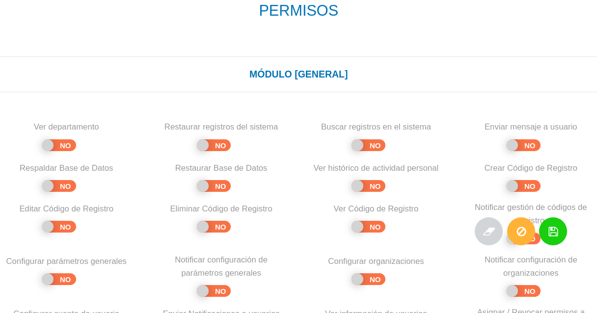
- Presione el botón Guardar para registrar los cambios efectuados.
- Presione el botón Cancelar para cancelar registro y regresar a la ruta anterior.
- Presione el botón Borrar para eliminar datos del formulario.
- Si desea recibir ayuda guiada, presione el botón .
- Para retornar a la ruta anterior presione el botón .
Consultar registro de cuenta de usuario
- Ingresar a través del panel lateral a Configuración > Acceso > Usuarios.
- Presione el botón Consultar registro
 ubicado en la columna titulada Acción de un registro de usuario que se desea consultar.
ubicado en la columna titulada Acción de un registro de usuario que se desea consultar.
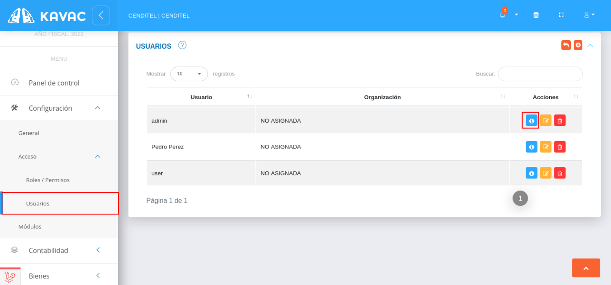
- A continuación el sistema despliega una sección donde se describen los datos de la cuenta de usuario seleccionada.
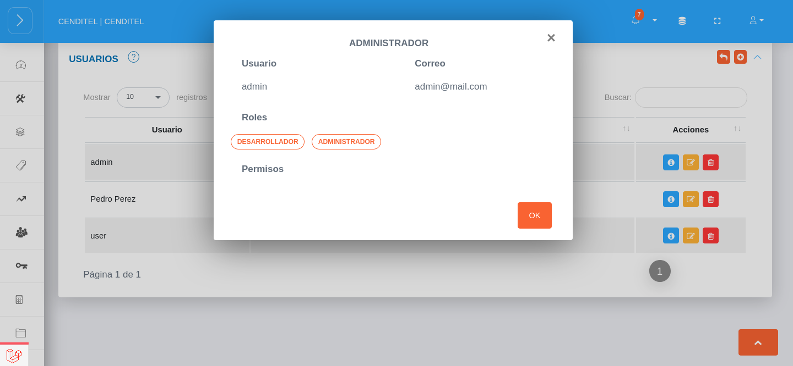
Editar registro de cuenta de usuario
- Ingresar a través del panel lateral a Configuración > Acceso > Usuarios.
- Presione el botón Editar registro
 ubicado en la columna titulada Acción de un registro de usuario que se desea actualizar.
ubicado en la columna titulada Acción de un registro de usuario que se desea actualizar.
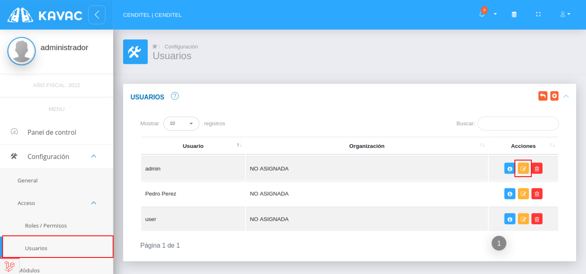
- Actualice los datos del formulario de Gestión de Usuario.
- Presione el botón Guardar para registrar los cambios efectuados.
Eliminar registro de cuenta de usuario
- Ingresar a través del panel lateral a Configuración > Acceso > Usuarios.
- Presione el botón Eliminar registro
 ubicado en la columna titulada Acción de un registro de usuario que se desea eliminar.
ubicado en la columna titulada Acción de un registro de usuario que se desea eliminar.
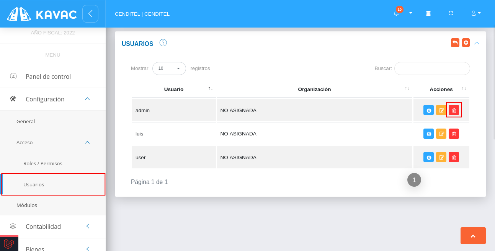